DAVID G. SIMPSON
Personal Web Site
ALASKA PHOTO ALBUM: PAGE 3
| 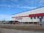 Stuaqpak in Barrow. The guide described this as Barrow's version of Wal-Mart. This was a kind of big general store. Milk was $8 a gallon here. |
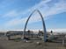 The famous whalebone arch in Barrow. The Arctic Ocean is visible in the background. |
|
| 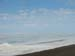 A view of the Arctic Ocean. Point Barrow (the northernmost point in the United States) is visible along the horizon. |
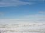 View of the Arctic Ocean near Point Barrow. I went down to the water's edge and put my fingers into the cold water of the Arctic Ocean. |
|
| 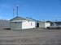 Utqiagvik Iñupiat Corporation (UIC) Science Center near Point Barrow. Formerly the Naval Arctic Research Laboratory (NARL), this is now run locally. It's used for research and public education programs. We got to go inside and see the displays. |
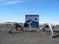 Me standing in front of the "Welcome to Barrow" sign, near Point Barrow. The Arctic Ocean is in the background. The date is June 15, 2005, and I'm wearing a heavy winter coat. |
|
| 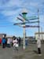 Sign post outside the Barrow Visitor's Center. Barrow is less than 1300 miles from the North Pole. |
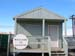 Barrow Visitor's Center. |
|
| 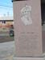 Monument to Will Rogers and Wiley Post in Barrow. They died in a plane crash near here in 1935. |
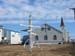 Another sign post, near the Utqiagvik Presbyterian church in Barrow. This church was established here in 1898. |
|
| 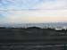 View of the Arctic Ocean from my room at the Top of the World Hotel in Barrow. This photo was taken at about 2:30 am, but the Sun was still up. |
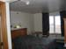 My hotel room in Barrow. |
{kind=link}
{kind=link}
{kind=link}
{kind=link}
{kind=link}
{kind=link}
{kind=link}
{kind=link}
{kind=link}
{kind=link}
{kind=link}
{kind=link}
| <<< Previous | Page 3 of 7 | Next >>> |
|---|
Contact Information
I may be contacted at: